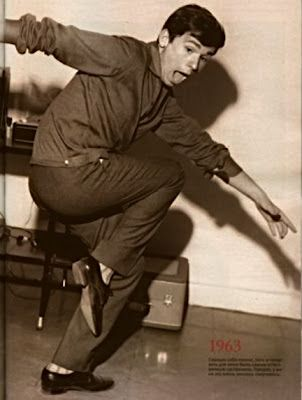
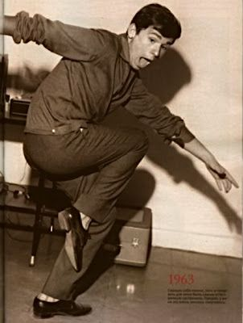

RENESZÁNSZ FESTMÉNYEK
A reneszánsz festészet a 14. és 17. század közötti művészeti irányzat, amely az ókori görög és római kultúrára épített.
A művészek célja az emberi test és az élet természetes ábrázolása volt. A reneszánsz művészet
legismertebb alkotói közé tartozik Leonardo da Vinci, Michelangelo és Rafael.

 

A Reneszánsz Festészet Története
A reneszánsz festészet a középkori vallásos művészetek után új szemléletet hozott a művészek számára. A főbb irányzatok
közé tartozott az olasz, flamand és német reneszánsz. A festők a valóságot próbálták pontosan ábrázolni, miközben
új perspektívát és fény-árnyék technikákat alkalmaztak.
A legfontosabb festészeti újítások közé tartozik a lineáris perspektíva és a tökéletes anatómiai ábrázolás.
A Legnagyobb Művészek
A reneszánsz kor legismertebb festői közé tartozik Leonardo da Vinci, aki az "Utolsó vacsora" és a "Mona Lisa"
festményekkel vált híressé. Michelangelo, aki a "Dávid" szobrát és a Sixtus-kápolna mennyezetét festette meg,
valamint Rafael, aki a "Szent Család" és a "Vatikáni Múzeum" híres freskóinak alkotója volt.
Híres Festmények
A híres reneszánsz festmények galériája: